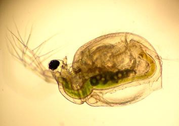
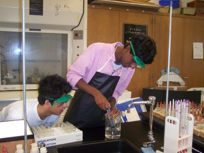
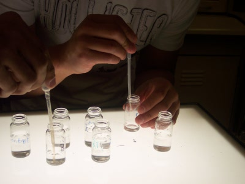
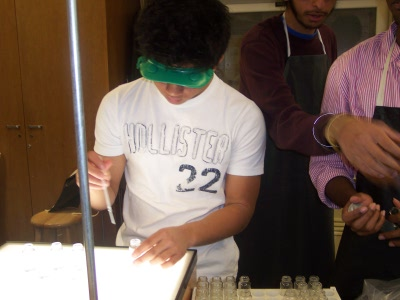

BIO ASSAY
Biological Assay conducts experiments to measure the toxicity of the water in Arcade Creek and the effects that it has on living organisms in and around the creek. "Indicator species", a group of animals that are extremely sensitive to changes in the environment, are used to examine the health of Arcade Creek.
Ceriodaphnia dubia
Its high sensitivity to changes in environmental conditions makes it an ideal indicator species.
Bio Assay Students
working in the Bio Assay lab.
Bio Assay Students
working in the lab
Bio Assay Students
working in the lab
The survival rates of Ceriodaphnia dubia , a species of water flea native to freshwater lakes and marshes around the world, are used as an indicator species for water quality. This species allows for accurate measurement of biological responses at each site. By observing the effects of the creek water on C. dubia and diatoms against controls, Bio Assay effectively monitors toxic pollutants in the creek and can effectively predict population declines in other species.
Bio Assay works collaboratively with Water Chemistry by testing Chemistry’s creek water samples in the laboratory. Initial tests include pH and electrical conductivity. A control group is created using a "Wasser" solution (consisting of 80% Arrowhead and 20% Evian water). Recorded numbers of C. dubia are then placed in vials containing creek water and in the vials containing "Wasser" control water. The water fleas are then provided light and time to respond to their new environment. Over a course of 48 hours, the C. dubia are counted and population changes are measured.
Large population decreases indicate the presence of toxins that could be potentially harmful to other organisms in the creek. Early detection of toxicity in the creek's water through the observation of indicator species can be used as an effective method to promptly alert other studies so that the creek's health can be restored.